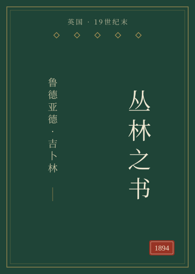
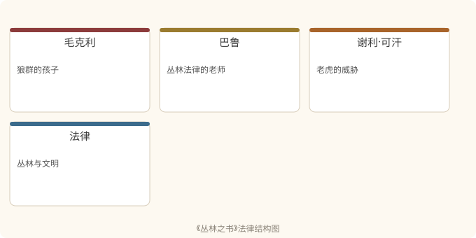

丛林之书
一、基本信息
| 作者 | 鲁德亚德·吉卜林 |
|---|---|
| 成书/出版 | 1894年（作者页 B277 口径：The Jungle Book (1894)——'stylistically superb collections of stories'） Rudyard Kipling — Encyclopaedia Britannica（百科全书） |
| 国别/地区 | 英国 |
| 时代 | 近代 · 19世纪末 |
| 体裁 | 故事集 |
| 语言 | 英语 |

《丛林之书》法律结构图（主题·结构图）
二、创作背景
作者页（B277）：吉卜林 major_works 载'The Jungle Book (1894) and The Second Jungle Book (1895)'——'stylistically superb collections of stories'（B277 作者页定位）。
题材（通说待核）：狼群养大的毛克利——熊巴鲁、黑豹巴希拉与老虎谢利·可汗。
三、内容脉络
毛克利在丛林的成长与'法律'——与老虎谢利·可汗的对决（通说待核）。
四、主要人物表
| 人物 | 身份 | 说明 |
|---|---|---|
| 毛克利 | 狼孩 | （通说待核） |
| 巴鲁 | 熊 | 法律的老师（通说待核） |
五、主题与艺术特点
- 丛林'法律'：文明与野性的边界（通说待核）。
- 成长与身份（通说）。
- 帝国视角下的印度丛林（通说待核）。
六、影响与评论
- Britannica：'stylistically superb collections of stories'（B277）。
Rudyard Kipling — Encyclopaedia Britannica（百科全书） - 作者页：吉卜林儿童故事代表作（B277 作者级定位）。
Rudyard Kipling — Encyclopaedia Britannica（百科全书）
七、阅读建议
难点
- 印度丛林词汇。
- '法律'条文（丛林法则）的阅读。
- 《丛林之书》（人民文学出版社/浙江文艺出版社版本，通说待核）。
- 英文原版（公有领域）。
吉卜林儿童文学首选。
八、待核实
- 1894年出版（Macmillan说）核对。
- 毛克利/巴鲁/谢利·可汗人名核对。
- 迪士尼改编（1967/2016）待核。
本页主要来源
相关作品：吉姆伊索寓言哈克贝利·费恩历险记